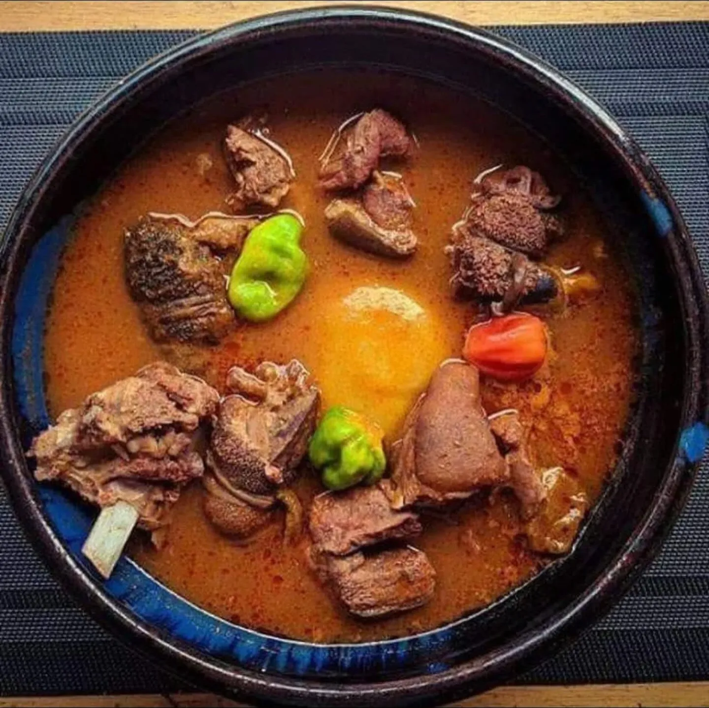
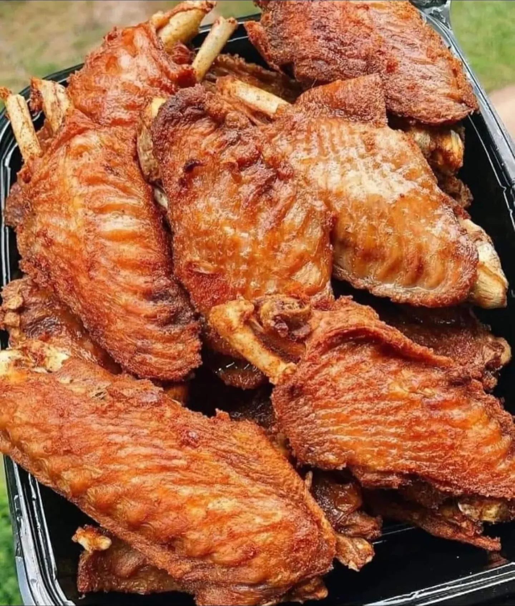

5310 Chamberlayne Rd · Richmond, VA
Authentic African food on Chamberlayne Road
Jollof, waakye, fufu with egusi, banku with okro soup, light soup and spicy khebab. West African cooking with Ghanaian favorites, ready for pickup or delivery.
Open Tue–Sat 11 AM–8 PM · Sun 1–8 PM


- 4.3 stars on Google from 190 reviews
- Black-owned Richmond restaurant
- Open Tuesday–Sunday closed Mondays
- Delivery on DoorDash & Grubhub
From the pots at Lizzy’s
Big plates, deep flavor, generous portions.
A taste of what comes out of the kitchen on Chamberlayne Road. Swallows and soups, rice plates, grilled skewers and fried favorites.



What people say
“Generous with the fufu.”
4.3stars on Google
from 190 reviews
Quotes are excerpts from DoorDash customer reviews.
“The fufu and goat egusi were phenomenal! They were very generous with the fufu portion”
“huge portions, fresh, perfectly seasoned…it’s SO DELICIOUS”
“That was the best fufu I’ve ever had absolutely perfect”
Quick facts
Everything you need before you go
Open Tue–Sat 11 AM–8 PM · Sun 1–8 PM
- Phone
- (804) 716-4259
- Hours
- Tue–Sat 11 AM–8 PM
Sun 1 PM–8 PM · Mon closed - Cuisine
- West African, with Ghanaian favorites: jollof, waakye, fufu, banku, kenkey, egusi, light soup, attiéké, spicy khebab
- Price guide
- Full plates $17.99–$19.99 on DoorDash. In-store prices may differ.
- How to order
- Walk in, call ahead for pickup, or get delivery on DoorDash or Grubhub
FAQ
Questions people ask
What are Lizzy's African Restaurant's hours?
Tuesday through Saturday 11 AM to 8 PM, Sunday 1 PM to 8 PM. Closed Mondays.
Where is Lizzy's African Restaurant?
5310 Chamberlayne Rd, Richmond, VA 23227, on the Chamberlayne Road corridor in North Richmond.
What kind of food does Lizzy's serve?
Authentic African food: West African cooking with Ghanaian favorites like jollof rice, waakye, fufu with egusi, banku with okro soup, light soup, attiéké with fish and spicy khebab.
Does Lizzy's deliver?
Yes, through DoorDash and Grubhub. You can also call (804) 716-4259 to order ahead for pickup.
How much does a meal cost?
Full plates such as jollof, waakye or fufu with egusi are listed at $17.99 to $19.99 on DoorDash. In-store prices may differ, so call for current prices.
Can I just walk in?
Yes. Stop by during open hours and order at the counter, or call ahead so your food is ready when you arrive.
Is Lizzy's Black-owned?
Yes. Lizzy's African Restaurant is listed as a Black-owned business on EatOkra.
I've never had West African food. What should I order?
A jollof or waakye plate is an easy, fork-friendly start. If you want the full experience, try fufu with egusi or light soup. Our first-timer’s guide explains each dish.
Is the food spicy?
West African cooking often uses fresh hot peppers, and soups and pepper sauces can bring real heat. Ask about spice when you order.
Where do I park?
Call (804) 716-4259 when you head over and the team can point you to the easiest parking at 5310 Chamberlayne Rd.
Pickup or delivery
Hungry? Call it in.
(804) 716-4259Tuesday to Saturday 11 AM–8 PM · Sunday 1–8 PM